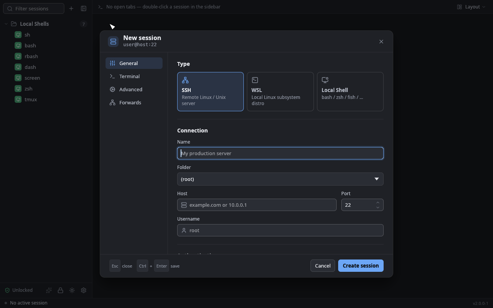
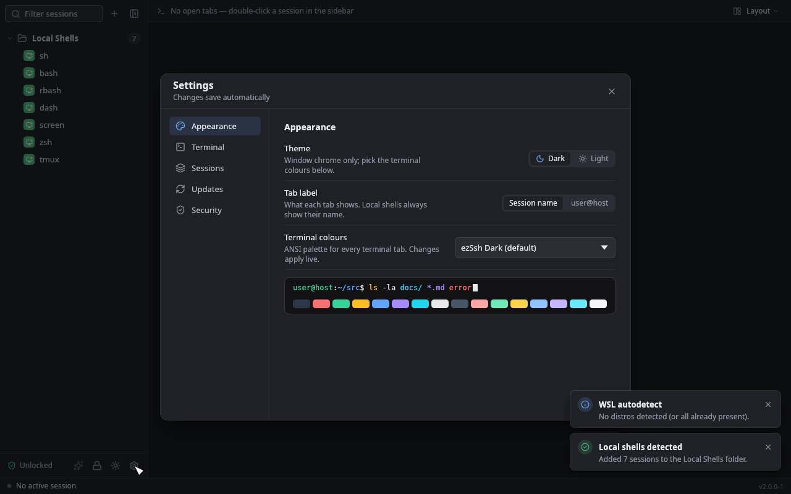

Every server, one window. No webview.
ezSsh is a free SSH client with a MobaXterm-style session manager, an encrypted vault, a real terminal, an SFTP pane docked on the active tab, WSL and local shells, port forwards and X11. One native Rust program for Windows, Linux and macOS.
Everything a MobaXterm user reaches for, in one native window.
Sessions on the left, tabs across the top, the file pane docked on the active tab. The layout you already know, without the X server install, the Java and the trial nags.
Sessions sidebar
Folders in folders, drag-and-drop, coloured icons, session-count badges and a green rail on whatever is connected. Ctrl K filters as you type.
SFTP pane that follows the tab
Opens on the same SSH connection, no second login. Breadcrumbs, multi-select, drop files and folders from your file manager, download whole trees, cancel mid-transfer.
WSL and local shells
Tabs for any WSL distro under a ConPTY, plus cmd, PowerShell, pwsh or any binary. The file pane browses the distro through \\wsl.localhost.
Port forwarding
Local, remote and dynamic SOCKS5 tunnels. Save them to a session to start on connect, or add one to a live tab. A side pane shows each tunnel green, red or amber when the port is taken.
X11 forwarding, bundled
Tick Forward X11 and remote GUI apps open as native Windows windows. VcXsrv ships inside the installer and the portable archive.
Bring your sessions
Import a .mxtsessions export or MobaXterm.ini with its folder tree; private keys go straight into the vault. An existing ezTerm database opens as is.
A real terminal, not a web page pretending to be one.
The same alacritty_terminal model that powers Alacritty, painted by egui. Output goes from the SSH reader straight into the grid, with nothing in between to buffer, stall or drop frames.
- Truecolor and 256 colours. The remote sees
xterm-256color; themes,lsandhtoplook right. - Kitty keyboard protocol and mouse reporting. Claude Code, neovim, tmux and htop get every key and click they ask for.
- Find with regex, clickable URLs and OSC 8 links, bracketed paste, Ctrl+wheel zoom from 8 to 48 pt.
- OSC 52 clipboard writes only. Remote programs can copy to your clipboard; they can never read it.
- 17 palettes applied live, from Campbell and Solarized to Dracula, Nord, Gruvbox and the GNOME, GitHub and Google pairs.
ops@db-primary:~$ git log --oneline --graph -n 5 * a3fcde6 (HEAD -> main, origin/main) ui facelift * 1f32adf rework phase 8 |\ | * 839936d dialogs on the native shell |/ * 6b0cce8 version ops@db-primary:~$ journalctl -u postgresql -n 4 --no-pager Nov 03 14:02:11 postgres[912]: LOG: checkpoint starting: time Nov 03 14:02:14 postgres[912]: LOG: checkpoint complete: 1184 buffers Nov 03 14:07:11 postgres[912]: LOG: checkpoint starting: time Nov 03 14:07:12 postgres[912]: LOG: checkpoint complete: 302 buffers ops@db-primary:~$ for i in $(seq 0 15); do printf "\e[48;2;%d;%d;245m " $((108+i*8)) $((166+i*4)); done truecolor: ops@db-primary:~$ open https://github.com/the-angwe/ezssh
Your secrets stay in the vault. The vault stays on your disk.
A master password unlocks the app. Everything it protects is encrypted at rest in a local SQLite file, decrypted only while in use and wiped from memory afterwards. There is no account and nothing is uploaded.
- Argon2id then ChaCha20-Poly1305 for every stored password, private key and passphrase.
- Known hosts in the database, trust on first use. A changed fingerprint is a hard failure that shows both keys.
- Signed updates. The updater installs only builds carrying the project's minisign signature, on a stable or pre-release channel.
- Redacted logs. Host, user and fingerprint are the only identifiers that reach a trace. Secrets never do.
- Idle auto-lock re-locks the vault after a timer you set; a re-entered master password gates backups.
One process. No Electron, no Tauri, no browser engine.
The window is egui, the terminal is alacritty_terminal, the SSH stack is russh, and all of it links into one binary. Less to install, less to patch, and keystrokes that arrive without a JavaScript detour.
Works in VMs and over RDP
No usable GPU? Software rendering kicks in on its own. Force a renderer with --renderer warp|glow if you need to.
Small dependency footprint
Linux needs xkbcommon, fontconfig, the X11 or Wayland client libraries and Vulkan or EGL. No webkit2gtk. Windows and macOS need nothing extra.
Updates itself, the way it was installed
NSIS, MSI, AppImage, deb or .app: the updater detects which and replaces it in place. Portable copies just link to the release.


egui / eframewindow, widgets, paintingalacritty_terminalgrid, VT parser, selectionrussh + russh-sftpSSH, SFTP, forwards, X11sqlx (SQLite)sessions, vault, known hoststokioevery connection, off the UI threadFree, now and later.
ezSsh is GPLv3. No trial, no licence key, no feature behind a paywall. Pick an installer, or the portable archive if you would rather not install anything.
$ sha256sum -c SHA256SUMS
| Platform | Installer | Portable |
|---|---|---|
| Windows x64 | ezssh_<v>_x64-setup.exeper-user, no adminezssh_<v>_x64_en-US.msi | …windows-x64-portable.tar.xzVcXsrv included |
| Linux x86_64 | ezssh_<v>_x86_64.AppImageezssh_<v>_amd64.deb | …linux-amd64-portable.tar.xz |
| Linux aarch64 | ezssh_<v>_aarch64.AppImageezssh_<v>_arm64.deb | …linux-aarch64-portable.tar.xz |
| macOS aarch64 | ezssh_<v>_aarch64.app.tar.gzunsigned | …macos-aarch64-portable.tar.xz |
Short answers.
Does ezSsh send anything home?
Only the update check, which fetches a signed latest.json from the GitHub release on the cadence you set in Settings. There is no telemetry, no crash reporter and no account.
Can I keep using MobaXterm or ezTerm alongside it?
MobaXterm, yes: import is read-only. ezTerm shares the database with ezSsh, and the first ezSsh start upgrades it so ezTerm no longer opens it. Back up first if you want the option to go back.
Where are my passwords and keys stored?
In ezterm.sqlite in your user data folder, encrypted with a key derived from your master password by Argon2id. The file is useless without the password. Backups are passphrase-wrapped bundles you can restore into any ezSsh install.
Which platforms are first-class?
Windows first: WSL tabs, local Windows shells and the bundled X server only apply there. Linux and macOS builds come from the same release pipeline and carry everything else. The macOS app is not signed or notarised yet.
Is it really free?
Yes. ezSsh is licensed under the GNU GPL version 3. The source, the issue tracker and the release pipeline are all public on GitHub, and contributions are welcome.